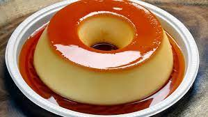

Home
Brazilian Style Flan

BR - Pudim de doce de leite
Let's learn a Brazilian recipe. A favorite of many Brazilians and you will certainly like it a lot.
It has a wonderful, creamy texture without being too heavy. Melted syrup will run down sides, forming a caramel sauce. Serve cool with a dollop of whipped cream on the side. Top it with toasted coconut and serve with a garnish of tropical fruits such as mango or pineapple.
- Pred: 20 mins
- Cook: 55 mins
- Additional: 2hrs
- Total: 3 hrs 15 mins
- Serving: 8
Ingredients
- 1 cup white sugar
- 4 eggs, separated
- 1(14 ounce) can sweetened condensed milk
- ¾ cup milk, plus
- 2 tablespoons milk
Steps
- Preheat an oven to 350 degrees F (175 degrees C).
- Melt the sugar in a heavy saucepan over low heat, stirring constantly. Once the sugar becomes a golden brown syrup after about 10 minutes, pour it immediately into a round baking dish, swirling so that the syrup coats all sides of the dish. Set aside to cool.
- Place the egg yolks into a blender and blend on medium for 5 minutes, then add condensed milk, 3/4 cup plus 2 tablespoons milk, and egg whites. Continue to blend until all ingredients are combined. Pour egg mixture into the baking dish and cover with aluminum foil. Line a roasting pan with a damp kitchen towel. Place baking dish on towel, inside roasting pan, and place roasting pan on oven rack. Fill roasting pan with boiling water to reach halfway up the sides of the baking dish.
- Bake in the preheated oven until a knife inserted 1 inch from the edge comes out clean, 45 to 50 minutes. The center of the flan will still be soft. Allow flan to cool before unmolding onto a plate. Refrigerate before serving.
- Experience the greatest delight of all time!!!

Home